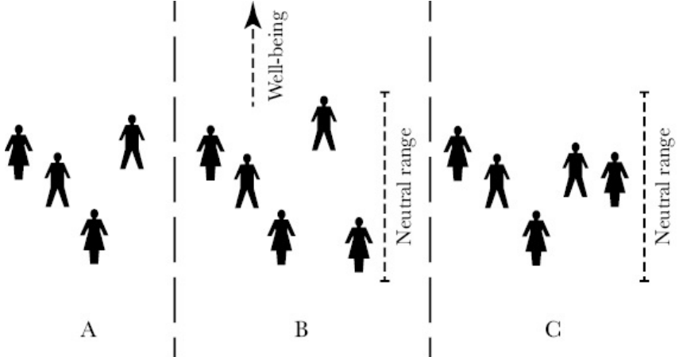

The argument against neutrality
David Pomerenke
Supervised by
Stefan Fischer
Jacob Rosenthal
A thesis presented for the degree of
Bachelor of Arts

Department of Philosophy
University of Konstanz
Germany
December 2019
The argument against neutrality
David Pomerenke
Supervised by
Stefan Fischer
Jacob Rosenthal
A thesis presented for the degree of
Bachelor of Arts

Department of Philosophy
University of Konstanz
Germany
December 2019
How should we as a society value changes in population size? The question may be crucial when evaluating global warming scenarios. I defend the intuition of neutrality, which answers a part of the question. It states that – other things being equal – it is ethically irrelevant whether or not additional people are added to a population. The argument against neutrality criticizes the intuition to be inconsistent. I present three new objections to the argument: First, economic efficiency needs not be assumed as an ethical principle. Second, the intuition can be interpreted consistently in terms of uncertainty. Third, the intuition can be interpreted and justified in contractarianism. These objections are independent from each other. They are built on controversial philosophical views and do not necessarily disprove the argument against neutrality. Rather, they undermine the authority of the argument by pointing out the weakness of several premises.
I begin by briefly introducing the framework of welfare economics, which this essay argues within. I then present in more detail the intuition of neutrality and the formal argument brought forward against it. The main part is dedicated to the development of three objections to the argument. I conclude with some remarks about the status and plausibility of the different objections.
Welfare economics is the theory how individual well-being should be aggregated to general well-being (or welfare). General well-being drives decisions in the welfare state. The theory is relevant for the execution as well as the design of economic policies. As in democracies the citizens and their representatives take part in the design process, welfare economics is subject to societal discourse in these nations. Within this discourse, citizens and media often do not only claim their own interests. Instead they also refer to ethical principles which are to guide democratic policy decisions. This essay is set within this democratic discourse and aims to defend a supposedly widespread intuition whose consistency has been challenged from the academic side.
The core of welfare economics is the welfare function (see Harsanyi 1955, p. 309). It is an aggregation function: a function which takes in the individual levels of well-being of several individual persons,  and delivers the level of welfare for the whole aggregated population comprising these individual persons. Well-being and welfare (which refers to aggregated well-being) are abstract terms. They are usually interpreted as a representation of preferences over different lives. But they can also be interpreted simply as hedonistic levels of lifetime pleasure, which will be sufficient for the purpose of this essay. Well-being (or utility) of a person p is denoted by u(p); individual persons are denoted by pi – the subscript is just there to differentiate between different persons. In similar fashion, welfare of a population P = { p1, p2, …, pn } is denoted by u(P).
  Definition 1: Welfare function
The content of the general welfare function is intentionally unspecified. The function is just a vehicle for discussion within welfare economics. Several specific welfare functions have been proposed and we will deal with some of them in later sections. For example, the classical utilitarian welfare function states that welfare is simply the sum u(p1) + u(p2) + … + u(pn) of all individual well-being.
I introduce these welfare functions because they are precise formalizations of competing ethical beliefs. In the first two objections, I will make use of them in order to demonstrate that when we assume certain ethical intuitions, the argument against neutrality does not hold. I will assume various widespread competing beliefs – average utilitarianism, the difference principle, and the median principle – and try to refute the argument against neutrality from each of these views. The idea is that many people will adhere to one of these principles so that they can agree with at least one of the refutations. The third objection is of a different kind because, rather than to the various beliefs about welfare functions, it relates to their justification.
Welfare economics are blind in a certain respect, and so will be this discussion: They are consequentialist. This means that they only evaluate actions by their outcome and in this context specifically by their impact on general welfare or goodness. Other elements of ethical evaluation, such as the procedural requirements of justice, will have to be considered separately (cf. Broome 2005, p. 401; Broome 2012, p. 99f). These separate considerations will often require consequentialist considerations as their basis, so this discussion may also be indirectly relevant for them.
The intuition of neutrality is assumed to be a widespread ethical intuition among humans (Broome 2012, p. 176f). The content of the intuition is also called the principle of equal existence (Broome 2004, p. 146). The following is the content of the definition: Let us assume two hypothetical scenarios A and B. The same people exist in both scenarios, except that in scenario B there are some additional people which do not exist in scenario A. The intuition says that which one of the scenarios is better depends entirely on the well-being of the people who exist in both scenarios and not at all on the additional people who only exist in B – as long as all the additional people in B have a well-being within a certain neutral range. More specifically, as long as the additional people in B are within the neutral range, scenario A is better in terms of welfare if the people who exist in both populations have a higher welfare in scenario A, and scenario B is better in terms of welfare if the people who exist in both populations have a higher welfare in scenario B.
We can formalize the scenarios as different welfare distributions uA and uB. Let P0 be a population of people who exist in both scenarios but need not have the same levels of well-being in both scenarios. Let P+ be the population of people who exist only in scenario B. Let [u1, u2] be the neutral range of well-being for added people.
Definition 2: The intuition of neutrality
This formal definition is to be interpreted in the following way: It does not matter in terms of welfare whether there exists an additional person in the population who lives at a moderate level of well-being. There are several moderate levels of well-beings, which form a range between a low moderate level of well-being u1 and a high moderate level of well-being u2. If however the additional person is at a very low level of well-being – below u1 – then the person might matter for the calculation of general well-being. (Arguably, the welfare would decrease because of the added person; though this is not specified by the intuition.) Similarly, if the additional person is at a very high level of well-being – above u2 – then the person might matter for the calculation of general well-being. (Arguably, the welfare would increase because of the added person.)
An exemplary application of the intuition is the evaluation of road safety (Broome 2004, p. 144f). In this context, the deaths of people dying in accidents must be weighed against the costs of preventing them. Whilst this is an ethically difficult problem on its own, one important long-term effect is usually left aside: The well-being of the expected potential offspring of the potentially dying person is completely neglected. One possible justification is the intuition of neutrality: We can expect the offspring to live within the neutral range of well-being and it is therefore neither positive nor negative whether they exist or not.
Another example is the evaluation of different scenarios of global warming (Broome 2012, p. 170). Global warming is likely to kill many people and thereby to prevent their offspring from existing. On the other hand, global warming may increase poverty, which is associated with higher birth rates. Thanks to the intuition of neutrality we can simply leave both of these effects aside in many of our evaluations – which comes handy as predictions in these domains attend to an enormous amount of uncertainty.
It is important to understand that the intuition of neutrality does not imply neutrality about the consequences on the existing population which are caused by the additional population. These consequences may be negative or positive, leading to contrary political reactions such as China’s restrictive one-child-policy and Europe’s reproduction-promoting policy (Broome 2012, p. 169). The consequences on the existing population may well determine whether additional people are good or not. Only the well-being of the additional people themselves does not do so according to the intuition of neutrality.
The question whether the intuition of neutrality is in fact a widespread intuition among humans appears not to have been investigated. It is not necessary for the argument against neutrality to assume such an empirical fact. Neither is it necessary for the refutation of this argument to assume so. If however this refutation were successful and the integrity of the intuition thus restored, then it would be desirable to investigate the empirical prevalence of the intuition.
The argument against neutrality (Broome 2012, p. 177f., where the figure below is also copied from) concludes that the intuition of neutrality is inconsistent. The argument is a version of the mere addition paradox (Broome 2004, p. 148) and a modification of the adoption problem (Broome 2004, p. 161). It is based on the following counter-example to the intuition of neutrality:

There are three scenarios A, B and C. They share the same population, except that one additional person exists in both B and C. In both B and C the additional person has a level of well-being within the neutral range. The argument is structured into two major steps:
First, scenario A is being compared to scenario B and to scenario C. The additional person can be neglected in this step because the person is within the neutral range. There is one person who is a little bit better off in scenario B than in scenario A. As all other persons have exactly the same level of well-being, it is reasonable that there is a higher welfare in scenario B than in scenario A. Contrarily, there is one person who is a little bit worse off in scenario C than in scenario A. As all other persons have exactly the same level of well-being, it is reasonable that there is a higher welfare in scenario A than in scenario C. As a consequence of these two observations, scenario B has a higher welfare than scenario C. Technically, this conclusion requires transitivity of the betterness relation.
Second, scenario B is compared directly to scenario C. Both scenarios comprise the same people, so there is no additional person in either scenario who could be neglected. The person who is not present in scenario A and has therefore been neglected above is much better off in scenario C than in scenario B. This big difference clearly outweighs the difference of the other person’s well-being in favour of scenario B. As there is moreover a higher equality in scenario C, scenario C obviously has a higher welfare than scenario B. This is in contradiction to the result of step one, so the counter-example refutes the intuition of neutrality, which has been its core assumption.
Whilst the argument above is intuitively plausible, it has two other important premises (Broome 2012, p. 177f): First, if in two scenarios all persons have the same level of well-being except for one person who is better off in the second scenario, then the welfare in the second scenario is higher than in the first. Technically, the second scenario Pareto dominates the first (Osborne 1997). Second, if in two scenarios with the same population the sum of individual well-being is higher in the second scenario, and at the same time the inequality of the distribution of well-being is lower in the second scenario, then the second scenario is better in terms of welfare than the first. I call this the fair aggregation principle. There are various ways to measure inequality, and the details need not concern us here. An excellent survey of one-dimensional inequality measures – as applied in welfare economics – is given in Sen & Foster 1997. The most prominent inequality measure is probably the Gini coefficient (see Ceriani & Verme 2012). Both of these premises appear to be very plausible, and they are dubbed “hard-to-doubt assumptions” in Broome 2012, p. 176.
The following formalization concisely sums up the argument presented above. It is structured in technical premises (P...), the assumptions that make up the setting of the counter-example (A...), and the conclusions drawn (C...). We can infer from the contradiction in (C8) that at least one of the premises and assumptions must be false. The assumptions merely describe the setting of the scenarios as depicted in the figure above. They are simply the assumptions making up the counter-example and there is no reason to doubt them within this proof. Moreover, premises (P2) and (P3) appear to be very plausible. As a consequence, the intuition of neutrality must be the false premise.
Proof 1: The argument against neutrality
There are two implications if this argument holds and the intuition of neutrality is inconsistent (cf. Broome 2005, p. 411): First, we as a society would have to develop a different, consistent principle to replace the intuition. We do not even currently know whether population changes should be evaluated as positive or as negative, just that they cannot simply be evaluated as neutral. The finding of a new principle with wide acceptance would certainly present a major societal task and require many years of discourse. Second, we would need to gain better knowledge of which actions lead to which consequences with respect to population changes. Only then would we probably be able to apply a principle which is not based on neutrality. This requires new scientific analysis and simulation because such predictions have often been omitted in the past (Broome 2005, p. 402; Broome 2012, p. 115f).
Broome 2004 develops five possible modifications to respond to the argument against neutrality (see p. 149):
The transitivity of the betterness relation is plausibly defended in Broome 2004, p. 151f. I will pursue a somewhat related approach to (b) and (c), focused more on justification, in the third objection. The second objection will be very similar to what is developed in (d) but it will also be compatible with (e). Whilst (P1) is discussed in (a), (P2) and (P3) have not been discussed so far. This is what I will do in the first objection.
I will start by delivering some general criticism on Pareto domination and aggregation and then continue to examine their relation to justice-oriented welfare functions.
When we say that a scenario Pareto dominates another scenario, we mean that at least one person is better off in this scenario than in the other while all other persons are at an equal level of well-being. The Pareto principle I have formulated as (P2) says that in such cases the scenario has a higher welfare than the other one. This principle, as well as the extending requirement of Pareto efficiency (cf. Osborne 1997), find their due place in economics where the objective is the efficient allocation of scarce resources (Samuelson & Nordhaus 2010, p. 4). However I doubt that they are suitable as ethical principles. Pareto efficiency has been criticized because the liberal paradox suggests that it may be incompatible with procedural elements of liberalism (see Sen & Foster 1997). But I believe that there is a more general problem with Pareto efficiency and even with Pareto domination: Consider a large population with one person whose well-being is much higher than the well-being of the others. Is it ethically desirable – is there a higher welfare – if the welll-being of this person is increased even more, while the well-being of the other persons remains the same? This can be intuitively doubted, and below I show some mildly convincing reasoning in favour of this intuition (doubt?).
A similar criticism applies to what I have called the fair aggregation principle. The fair aggregation principle is a combination of what I call the simple aggregation principle – that general welfare is the simple sum of all individual well-being – with the additional requirement that distributions need be more equal to have a higher welfare. The principle is non-exhaustive: it does not tell us anything about populations with a higher sum of well-being and a lower equality, and it does not tell us anything about populations with a lower sum of well-being and a higher equality. But that is not a problem, since such populations do not play a relevant role in the counter-example to neutrality.
The problem (for what?) is that equality must reasonably be a global criterion, which means that it somehow takes into account the well-being of every single person. This implies that a small decrease ùúÄ in well-being of the person who already is worst off can always be compensated by some large increase of equality within the rest of the population. This follows because otherwise the well-being of the worst-off person would completely determine the equality ‚Äì which is not the idea of inequality measures (vs. justice measures?).
(structure: intro, e vs f, e vs d) Now imagine three scenarios, all with the
same people: In scenario D there is some utility distribution with lots of
inequality. The person who is worst off in scenario D is called p. In scenario E,
the well-being of the worst-off person from scenario D is decreased by some
very small amount ùúÄ. As we have just seen, this can be compensated in terms
of equality by improving the equality within all the other persons to a more or
less drastical amount. Let us assume this has taken place, so that the overall
equality in scenario E is higher than in scenario D. Let us further assume that in
scenario F all people are at the same level of well-being, plus  . The
general equality has not decreased (maybe even increased) in F
in comparison to E. However the sum of well-being has increased
because the well-being of many persons has been increased by
. The
general equality has not decreased (maybe even increased) in F
in comparison to E. However the sum of well-being has increased
because the well-being of many persons has been increased by   while the well-being of only one person has been decreased by
 while the well-being of only one person has been decreased by  .
As a consequence, both the sum of individual well-being and the
equality are better in F than in D, so according to the fair aggregation
principle there is a higher welfare in F than in D. At the same time,
the worst-off person in D is even worse off in F. This seems intuitively
implausible and I will soon (now?) give a more elaborate account of this
implausibility.
.
As a consequence, both the sum of individual well-being and the
equality are better in F than in D, so according to the fair aggregation
principle there is a higher welfare in F than in D. At the same time,
the worst-off person in D is even worse off in F. This seems intuitively
implausible and I will soon (now?) give a more elaborate account of this
implausibility.
STRUCTURE!!! 1. pareto stuff, 2. fair aggregation
For this objection I will use as a specific welfare function the difference principle. The difference principle is a concept which is inferred from an analysis of justice. Its justification as the second principle of justice is given and discussed in Rawls 2005, pp. 3-183. Rivalling average utilitarianism, the difference principle is probably the most prominent and most widely accepted welfare function. In its core formula, the difference principle states that differences from socioeconomic equality are only permitted if they are to the benefit of the least advantaged (Rawls 2005, p. 302). This is equivalent to optimizing the status of the least advantaged. The difference principle is therefore usually translated to a welfare function where general welfare is determined only by the well-being of the group with the lowest level of well-being. (Such translation commits a major error in ignoring the difference between primary goods and well-being as I discuss in Pomerenke 2017, p.12f. – But this does not bear upon the reasoning here, which is based solely on Pareto comparisons.) Whilst the difference principle refers to the least advantaged group – which makes sense in application – there is no mistake in referring to the least advantaged person for the sake of theory. Because of its resemblance to the decision-theoretic rule of minimum maximization, this formulation of the principle has also been called the Maximin rule. (Although this labelling has been rightly criticized in Rawls & Kelly 2001, p. 43.)
Definition 3: Difference principle / “Maximin”
w(P) = minp∈P u(p)
According to the difference principle in its Maximin version, both Pareto domination and fair aggregation are false: Imagine that one person who is not the worst-off in either scenario is better off in the first scenario than in the second while all other persons are equally well off. Then Pareto domination requires that the first scenario has a higher welfare. The Maximin rule, however, states that both scenarios have the same welfare because the well-being of the worst-off person has not changed. And we have seen above that as a consequence of fair aggregation a scenario may be evaluated as having a higher welfare even if the worst-off person is even worse off – in strict contradiction to the difference principle.
But the difference principle in its Maximin formulation has been designed with the practical idea in mind that there will seldom or never be a comparison in which the least advantaged will have the exactly same level of well-being in both scenarios. Yet for the theoretical case of a such comparison (unclear why we need it; it is not the case in the above example!) an extension to the Maximin rule has been developed (cf. Rawls 2005, p. 83): It says that in the case that the least advantaged are at the same level in both scenarios, the second-least advantaged must be regarded. And if the second-least advantaged are also at the same level, then the third-least advantaged must be regarded, and so on. Because it resembles a lexicographical sorting algorithm, the extended rule is called the Leximin rule. It is most clearly formulated as a recursive selection function which outputs the better population of two populations whose members are sorted in ascending order according to their well-being:
[Warning: Draw object ignored]Definition 4: Difference principle / “Leximin” selection function
We can easily observe that – unlike the Maximin rule – the Leximin rule is compatible with Pareto domination: If all persons are equal in two scenarios except one who is better off in the second scenario, then the Leximin algorithm will proceed from the least advantaged person up to the person in question. Alternatively, it will proceed up to the person who has taken the original person’s place in the ordering, because the original person has moved up a few positions in the ordering. This process automatically ensures Pareto domination. So at a second glance at the difference principle, it does not contradict but indeed rather support Pareto domination. This is in favour of the argument against neutrality.
The same, however, cannot be said of fair aggregation. We have seen above that fair aggregation in some cases evaluates distributions as being better even though the worst-off person is worse off. In such a case, the Leximin algorithm would stop in the first iteration and amount to the Maximin rule. The algorithm would not regard the improved well-being of all the other persons, because not only the Maximin rule but also the Leximin rule deem all general improvements irrelevant if they are to the disadvantage of the least advantaged. So for one major welfare function the “hard-to-doubt” premise of fair aggregation (P4) is false and the argument against neutrality cannot succeed.
Überleitung, Rawls -> avg utilitarianism
I will start by explaining how the argument against neutrality requires the neutral range to be a proper range rather than a single level. Afterwards, I will try to make plausible why we should rather assume a single neutral level in theory and elucidate how, taking uncertainty into account, this single neutral level may approach a proper neutral range in practice.
So far, the formalization of the intuition of neutrality involves a neutral range [u1, u2] without specifying u1 or u2. As per Def. 2, the neutral range could in fact just be a single number with u1 = u2. But the argument against neutrality interprets the intuition of neutrality in a way that does not permit that the neutral range is just a single level of well-being: In order to neutralize and counter the positive difference of well-being of person p between scenarios B and C, the difference of well-being of person q must be non-zero and negative. So the neutral range must allow for such a difference, because the well-being of q is to be within the neutral range: Even if the intuition of neutrality in this form empirically holds as a widespread intuition, it is still theoretically problematic. One of its implications is for example that we cannot say that a scenario with many added people at the highest well-being within the neutral range is better than a scenario with many added people at the lowest level of well-being. This implication – that well-being within the neutral range is incomparable – is at least controversial. But there are more pressing theoretical questions: What values should u1 and u2 assume? Imagine someone proposed as a specification that u1 should be at the level of well-being of the person at the top of the lowest 10% in terms of well-being. How should we respond? How should we know whether that is correct? What kind of arguments would we have to employ in order to plead for a higher or lower value? What kind of ethical principle determines the range?
These problems do not arise if we restrict the intuition of neutrality to a single level of neutral well-being: (structure???) On the one hand, this would directly invalidate the argument against neutrality and circumvent the problem of the incomparability of people within the neutral range which I have just touched upon. On the other hand, there exists an established ethical theory which justifies the existence of this level and explains what value it should take. The theory is average utilitarianism and one kind of justification for it is found in Harsanyi 1955. Average utilitarianism is a highly controversial theory, specifically but not only when it is understood as a complete moral theory rather than only a theory of goodness (cf. Broome 2012, pp. 50-54; Arrhenius, Ryberg, & Tännsjö 2017, sec 2.1.1; Rawls 2005, pp. 167-175, 572f). But at least it is a consistent ethical theory which is not only able to account for many other ethical intuitions but also to answer our quantitative and justificatory questions regarding the neutral level of well-being. The welfare function of average utilitarianism states that general welfare is the average of all individual well-being:
Definition 5: Average utilitarianism
w(P) = ∑ p∈P u(p) ∙|P|-1
This implies that in order to be neutral to existing welfare, the welfare of an added population must equal the welfare of the existing population. The notation is a bit sloppy in the following. It should be additionally specified that not every single added person needs to be at this neutral level, but rather the average of all added persons needs to be at this level.
Definition 6: The neutral range in average utilitarianism
[u1, u2]  = u1 = u2  = u0 = w(P)
So average utilitarianism provides a response to the argument against neutrality by modifying the intuition of neutrality and assuming a neutral level instead of a neutral range. As a result, the intuition is consistent, calculable, and maybe even justified (is the latter investigated here or without scope). Average utilitarianism plays (in this case) a revisionist role, a theory of moral error (cf. Mackie 1979, p. 35): It tells us to slightly adjust our intuition – to sharpen it – so that it is consistent in itself and in its relation to other moral judgments. This is an acceptable, maybe desirable intervention to our intuitions.
Furthermore, this theoretical sharpening would not even necessarily change our application of the intuition of neutrality. This is because in practice, uncertainties are attached to all quantities of well-being, specifically the neutral value. When I talk of ‘uncertainty’ here, then I refer to ‘measurement uncertainty’ as used in statistics and the quantitative sciences. The uncertainty in question is quantifiable, so in it falls into the decision-theoretic category of risk and not into the decision-theoretic category of uncertainty. Measurement uncertainty is a well-developed theory (see Runge 2007). Unlike the approaches of introducing indeterminacy in the forms of incommensurateness or vagueness – which are pursued and discarded as a solution to the argument against neutrality in Broome 2004, pp. 164-183 – uncertainty does not suffer from difficult problems such as greediness (aha what does that mean? explain it shortly?).
The neutral value is affected by two kinds of uncertainty: The first kind of uncertainty arises from its definition. Sensitivity analysis of Def. 5 tells us that the uncertainty of the neutral level is composed of the average uncertainty of the well-being of all existing people. Second, the level of well-being of any actual person that is considered to be at the neutral level or not is also subject to some uncertainty. In both cases, the uncertainty arises from the difficulty to quantify the personal well-being of existing or hypothetical persons. These uncertainties are not on a theoretical level. On the theoretical level it has been questioned that such quantifications are metaphysically and psychologically possible at all (cf. Harsanyi 1955, pp. 317-319). On the practical level, these quantifications are de facto happening (Broome 2004, ch. 9) but there is a great level of uncertainty attached to them (elaborate on thisin two three sents? its interesting).
Person q from Proof 1 is at different levels in scenario A and B. We can interpret the neutral range as a neutral level u0 = u1 + (u2 - u1) / 2 with an uncertainty of σ(u0) = plusmins (u2 - u1) / 2. As a consequence, the different values of well-being for person q in scenarios A and B are compatible with the assumption that there is a single neutral level with u0 with an uncertainty of σ(u0).
We can then accept the theoretical notion of a neutral level while at the same time both maintaining the practical idea of the intuition of neutrality and avoiding the argument against neutrality. (point to above, that the argument requires a proper range!)
Is doing so just a sophisticated trick? No. The specific nature of the intuition of neutrality had not been analysed before. It was a bit rash to conclude from the rough idea of the intuition of neutrality that it has to be formalized as a proper range. I have explained that there is at least no obvious possibility of justifying such a range, and that as a consequence we do not know how to quantify the range. Average utilitarianism presents a possible justification for a neutral level, and together with uncertainty it can justify something like a range. Maybe this formal interpretation is even closer to the original intuition of neutrality than the interpretation as a real range is. If it is not, there are many reasons that we should adjust our intuition.
make clear in which case this matters: neither rawls nor avg util – also zb was?
während bei (2) der neutral range auf eine zahl verengt wird, wird er in (3) ausgedehnt, sodass alles neutral ist
The difference principle and average utilitarianism are probably the two most prominent welfare functions. In both of them the argument against neutrality does not hold for different reasons. Yet, although these frameworks are so well received, they both suffer from a justificatory problem. The specific justificatory problem which matters in our context is that the frameworks assume a universal moral domain. This means that they assume that in the first place every person should receive moral consideration. The universal domain is what I will question in this objection and it will lead to another solution of (response to) the argument against neutrality.
So far we have interpreted the intuition of neutrality as a principle which is applied only in a particular instance of comparing the welfare of two scenario: Whenever there are additional persons in one scenario who do not exist in the other scenario, then we can apply the intuition of neutrality. This is reflected in the conclusions in Proof 1. In (C3) and (C4) we have used the intuition of neutrality because there is a different number of persons in scenario A than there is in scenarios B and C. But we have not used the intuition in (C7) because we have been comparing scenarios B and C, and these scenarios have the same number of persons: “B and C contain the very same five people, so in comparing their values all five count as existing people.” (Broome 2012, p.177; this has been marked as potentially problematic in a talk with Stefan Fischer.)
A simple solution to the argument against against neutrality is to deny that in such cases all people count as existing people. If we regard person q (the person who exists in scenarios B and C only) as non-existent, then we cannot derive that C is better than B by direct comparison (C7), and the argument fails: (explain ‘ notation briefly) This requires a revised version of the intuition of neutrality (P1). The only thing which is different from Def. 2 is that the intuition has been extended to comparisons of scenarios where the number of persons is the same: (very unclear! there is no numbers in the formula)
Definition 7: The intuition of neutrality (revised)
But while this solution is compelling so far, it brings with it a formal problem. Thus far, we have not really needed to specify P0 and P+ any more than what is implicit in Def. 2: P0 is the population which exists in both scenarios and P+ is the population which exists only in scenario B. This is no longer implicit in Def. 7: P0 and P+ both exist in both scenarios. (this should probs go before the definition) There is no formal way to distinguish them. P+ are the people who are neutral with respect to general welfare if their well-being lies within the neutral range. And P+ are the same people in B and in C. But P+ could be any persons: P+ could be all persons, no persons, or an arbitrary selection of persons. So as they are not already formally specified we need to specify P+. It is obvious how we specify them:
  Definition 8: Additional specification of the intuition of neutrality
  P0 are the existing people and P+ are the non-existing people.
Unlike all the formal definitions above, this is a material definition, which is not a problem. The problem is that it is also a relative definition. Which people are existing and which are not depends on the time of evaluation. When we consider whether it is good or not that a baby is born, we arrive at different evaluations before and after the pregnancy of the baby’s parent. Before the pregnancy, the baby’s well-being has to be ignored because of the intuition of neutrality, but after the pregnancy, the baby’s well-being has to be considered. Imagine that we want to know whether it is positive or negative for the general welfare whether the baby suffers from a chronic disease. Then before the pregnancy we will derive that the chronic disease is neutral with respect to general welfare and after the pregnancy we will derive that it would be better for general welfare if the baby does not suffer from a such disease (is better / would have been better).
More formally, the evaluation of welfare depends on what scenario we use as a base scenario based on which we judge which persons are existent and which are not. Such a base scenario may be either of the scenarios which we compare, or a third scenario. In the case of the argument of neutrality, we need to choose scenario A as our base scenario so that we can arrive at the alternative conclusion (C8’).
  (P5’)  A is the base scenario,
    uA is the distribution of well-being of the base scenario.
So, to be more precise, I revise (C8’) and include (P5’) as a premise:
(C8’)  (C7’) ∧ (P1) ∧ (P5’) ⇒uB(P0 ∪ P+) > uC(P0 ∪ P+)
A similar approach (how is it different?) to this relativism [in what sense?] is pursued in Broome 2004, pp. 157-162. There it is discarded for two reasons: First, because of the inconsistencies which arise when switching the base scenario (pp. 68-76). Second, because of the difficulty to ethically justify person-relativity or community-relativity (p. 161f). I will now address both issues.
The problem of inconsistency cannot be denied: If ethical evaluations of welfare depend on the choice of the base scenario and if every person chooses the person’s own situation as the base scenario, inconsistencies will arise. Principally, there are inconsistencies of several kinds. One person could contradict another person from the same population. As we are concerned with population ethics here, where persons will usually somehow consider the whole population for their evaluation, this is not necessarily a problem. A necessary problem is the time-dependence of the evaluation, which is pointed out in Broome 2004, p. 75: “You choose rightly, but it later turns out you chose wrongly. Indeed, it may turn out that you ought later to undo what you rightly did. Moreover, you might be able to foresee even as you choose A that just this would happen. This is a most implausible sort of incoherence in your activity.” This sounds like a problem at first, but in fact it is well acceptable.
(one WEAK possible objection is the idea that) There is no such thing as inconsistency between actions. (This needs SEP backing!!) Such a concept exists of course symbolically, and for example when two persons or one person act out two actions which appear to follow opposite intentions, we might say that the actions are inconsistent. But the concept is very fuzzy and the existing theory of rationality does not provide a criterion for identifying inconsistent actions. What the theory of rationality does provide, is a criterion for identifying inconsistent beliefs: Beliefs are inconsistent if their propositions are contradictory. Without a formal theory of inconsistent actions, philosophers should probably restrict themselves to the analysis of inconsistent beliefs, not actions. (not yet, but why couldn’t there be one?) The underlying beliefs are complex: Before the action A, we think that we should do A. And we think that as a causal effect of doing A, we will regret having done A. So we think that we should do A, and that we will regret it afterwards. After the action A, we think that we should not have done A. We also think that we have thought that we should do A. There is no formal contradiction in these beliefs. It may very well be rational to think A at the moment and to expect that oneself would think the opposite of A under different circumstances. As the enactment of A causes a change of circumstances, the above beliefs may come about, and there is nothing wrong with them. There is also no such thing as a problem of “undoing” an action in philosophical terms. A is done within one set of circumstances and then within another set of circumstances is “undone”. The two actions of “doing A” and “undoing A” can be differentiated by the fact that they have taken place within different contexts (one context without the causal effects of A and one context with the causal effects of A). There is no reason to ignore the contexts of the actions and to strip them down to the notions of “doing A” and “undoing A”.
Let us examine two examples where we ignore any ethical constraints and just consider the consistency of their beliefs. Imagine a community of two persons who reason whether or not they should improve some genetic condition of their child. They may be concerned about the well-being of the family and think: “Our family is rather against this for religious reasons. Once the child is born, it will clearly prefer that the modification had taken place. Our family will then have to respect the preferences of the child. As a result, our family will think that the modification should have taken place; and if it will not have taken place, our family will probably be very unhappy about it.” The parents in their situation of reasoning should then consider whether they want to experience this later unhappiness. But there is no rule of rationality which would require them to somehow align the present and future preferences of the family. After all, the family will consist of different persons after the child is born. As a second example, imagine a direct democracy called Alphaland whose citizens consider – because of their liberal ideal – to invade and annex an autocratic country called Betaland with a population bigger than their own population. They consensually adopt a resolution: “Alphaland wants to annex Betaland. Alphaland expects Betaland to condemn the violence related to the annexation. As the current citizens of Betaland will be the majority in Alphaland after the annexation, we expect that Alphaland will officially regret the annexation afterwards. But we expect that most former Betaland citizens will nonetheless want to remain in Alphaland for pragmatic reasons (so there is no reason against the action).” Rationality does not require present Alphaland to consider the interest future Alphaland. After all, future Alphaland is made up of different citizens than present Alphaland. These examples illustrate that there is no requirement for communities to be consistent with their beliefs and expected beliefs over time. (Whether this principle also applies to individual agents is up for discussion, but luckily needs not concern us here.)
hier deutlicher das problem auspointen: communities erscheinen, zb weil sie namen haben, wie menschen. dabei gelten viel weniger strenge regeln zb bzgl konsistenz (vgl auch arrow). ob community denken gut ist, bleibt offen, aber es passiert ja offenbar. evtl wäre der absatz über diesem ein argument gegen solches community denken (will ich nicht FÜR community denken plädieren?)
I have just talked about the consistency of beliefs of communities. But we are here concerned with general ethical belief, which one would assume to be independent from the practical belief of some community. (bessere überleitung) This disparity is the subject of the second objection to relativism: Ethics is nothing related to the welfare of any community, but it is related to the welfare of all – ethics has a universal domain.
In summary, Broome commits two errors: In two common frameworks his “hard-to-doubt” strong Pareto assumption is false. In the third framework his implicit assumption that the intuition of neutrality requires proper ranges of neutral values is false. It is also plausible that the assumptions on their own do not reflect common ethical intuition. The intuition of neutrality might actually be right.
8115 words, 49645 characters (Pomerenke, 2017)
   Pomerenke, D.  (2017). Nach welchen Prinzipien sollte der Staat die Verteilung von Gütern gestalten? Eine systematische Darstellung der Diskussion zwischen John Rawls und John Harsanyi [Hausarbeit]. Konstanz. Retrieved from https://archive.org/details/rawls_vs_harsanyi
Note: Source files and bibliography for this document are publicly available on Github.